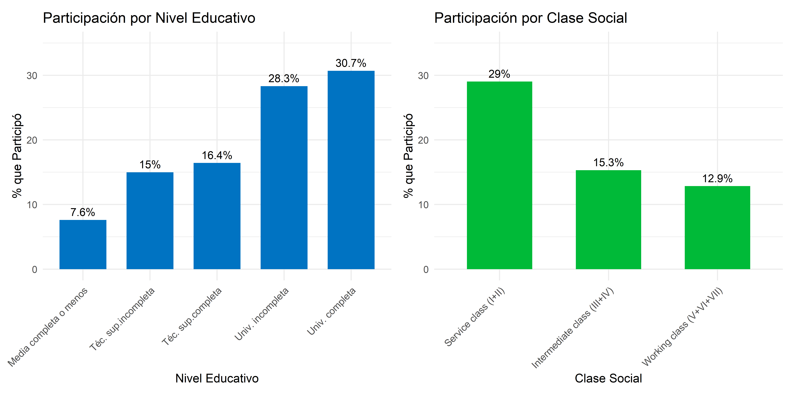
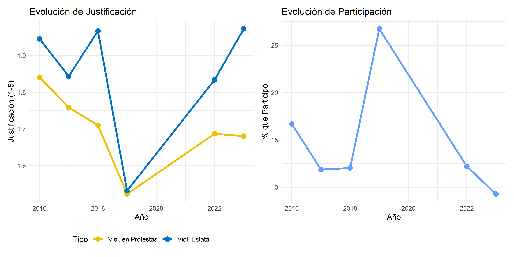
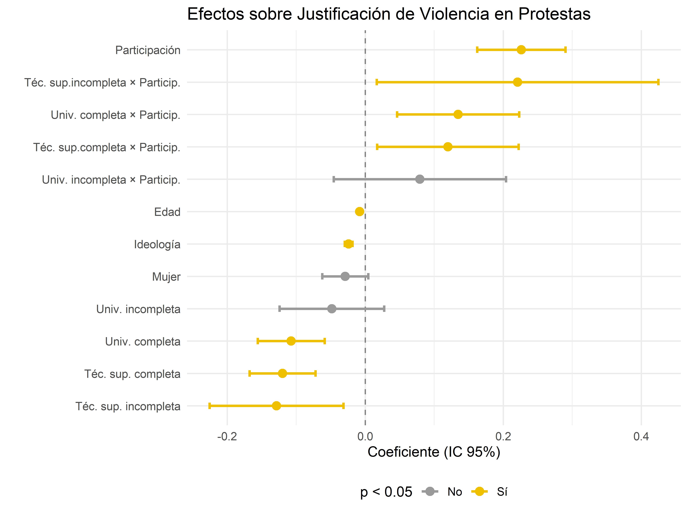
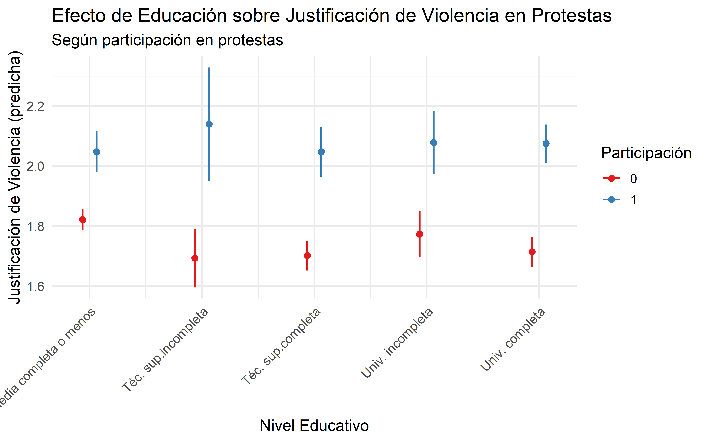
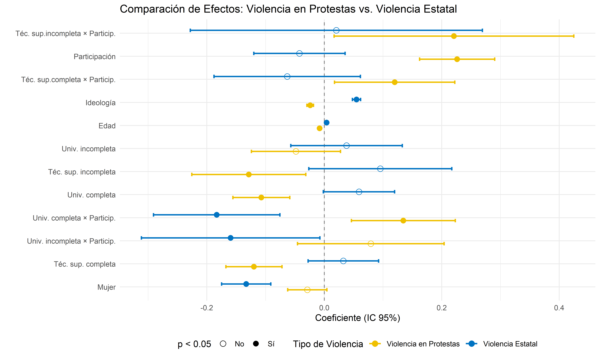
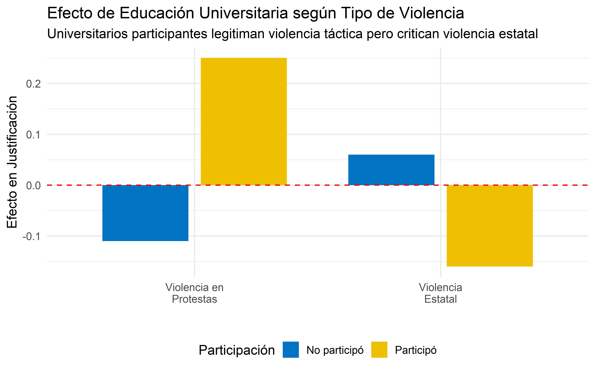
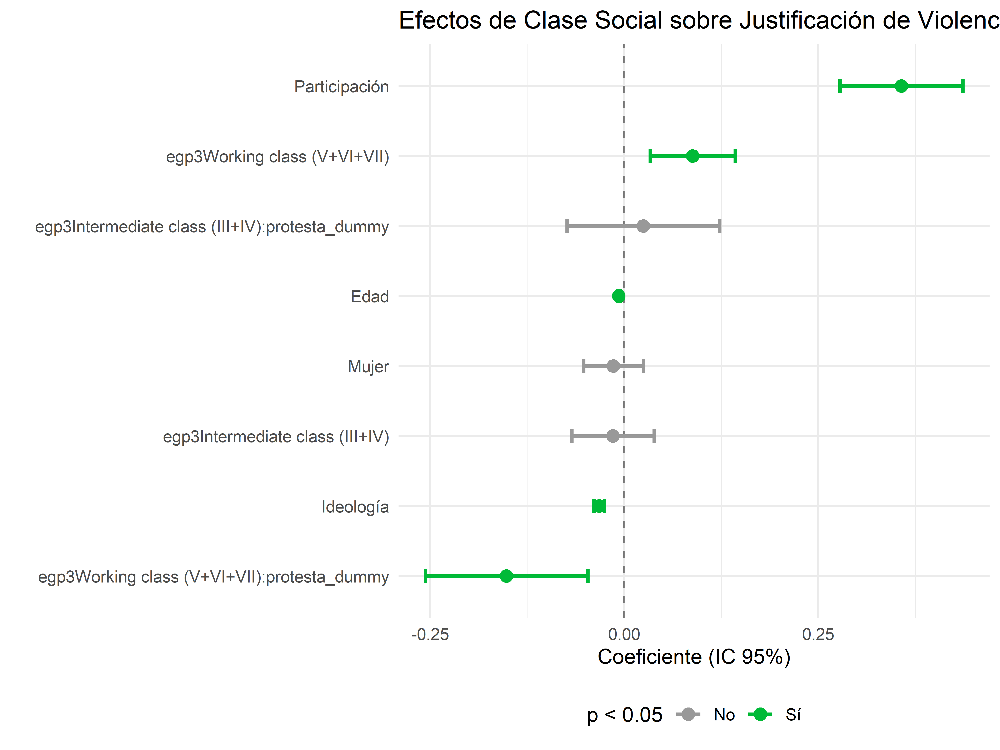
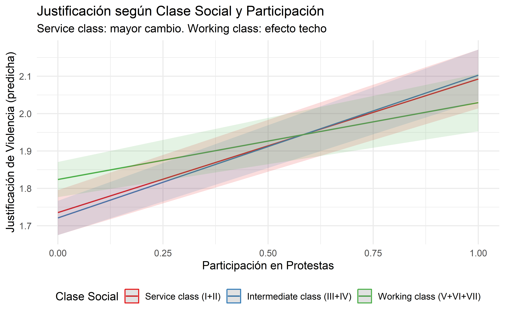

| educ_cat_unordered | Participacion | N | Viol. Protestas | Viol. Estatal |
|---|---|---|---|---|
| Media completa o menos | No participó | 8139 | 1.65 | 1.87 |
| Media completa o menos | Participó | 671 | 1.96 | 1.65 |
| Téc. sup.incompleta | No participó | 448 | 1.63 | 1.93 |
| Téc. sup.incompleta | Participó | 79 | 2.07 | 1.75 |
| Téc. sup.completa | No participó | 2267 | 1.57 | 1.90 |
| Téc. sup.completa | Participó | 446 | 1.96 | 1.59 |
| Univ. incompleta | No participó | 739 | 1.70 | 1.89 |
| Univ. incompleta | Participó | 292 | 2.08 | 1.52 |
| Univ. completa | No participó | 2192 | 1.60 | 1.96 |
| Univ. completa | Participó | 971 | 2.12 | 1.47 |

Actitudes hacia la violencia política: Educación y Clase en el ciclo contencioso chileno (2016-2023)
René Canales Sellés
Prof. Guía Nicolás Somma
Instituto de Sociología, Pontificia Universidad Católica de Chile
Fondecyt 1230922 “Actitudes y Comportamiento Político Juvenil: Desigualdad, estilos de socialización escolar e influencias intergeneracionales”
12 de noviembre, 2025
Contexto
¿Cómo la educación y clase social moldean actitudes hacia la violencia política?
Contexto: Estallido social chileno (octubre 2019) - ciclo contencioso inédito con alta represión estatal y justificación diferenciada de violencia según perfil social.
Problema teórico: Literatura clásica predice que más educación = menor violencia. Pero en Chile 2019, han surgido estudios que acusan lo contrario: sectores educados y participantes justificaron más la violencia de protesta (Cox et al., 2023).
Argumento central: Los efectos de educación y clase son condicionales a la participación:
Educación como amplificador: Sin participación → efecto civilizatorio. Con participación → provee marcos ideológicos para legitimar violencia de protesta.
Reconfiguración moral: Universitarios movilizados distinguen entre violencia de protesta (legítima) vs. estatal (ilegítima).
Clase social modera: Clase trabajadora = tolerancia basal alta, cambio bajo. Clase de servicio = tolerancia baja inicial, alto cambio al participar (convergencia por reencuadre moral).
Contribución: La participación transforma actitudes de forma diferenciada según posición estructural - explica transversalidad del movimiento.
Pregunta
Pregunta de investigación: ¿Cómo interactúan la educación, la clase social y la participación en protestas para moldear actitudes hacia la violencia política en el contexto chileno?
Argumento central: Los efectos de educación y clase son condicionales a la participación:
Educación como amplificador: Sin participación → efecto civilizatorio. Con participación → marcos ideológicos para legitimar violencia de protesta.
Reconfiguración moral: Universitarios movilizados distinguen violencia de protesta (legítima) vs. estatal (ilegítima).
Moderación de clase: Clase trabajadora = tolerancia alta/cambio bajo. Clase de servicio = tolerancia baja/cambio alto al participar.
Objetivos:
Mostrar que el “efecto civilizatorio” de la educación es condicional al contexto participativo
Evidenciar que participación interactúa con estratificación social de forma compleja
Explicar bases sociales diferenciadas de legitimación durante el estallido
Antecedentes
Educación y Actitudes Políticas (1/3)
Tesis clásica: “efecto civilizatorio”
- Educación → tolerancia, moderación, rechazo a violencia (Lipset, 1959)
- Supuestos clave:
- Habilidades cognitivas para comprender complejidad social
- Valores democráticos y pluralismo
- Eficacia política subjetiva
Limitación: Modelo presupone igualdad estructural que raramente existe
Educación y Actitudes Políticas (2/3)
Educación en contextos desiguales:
- No opera en terreno neutro → reproduce jerarquías (Bourdieu)
- En sistemas percibidos como injustos: educación permite elaborar narrativas sofisticadas de legitimación
- Educación como amplificador cognitivo, no barrera universal
- Permite articular violencia como “respuesta moral necesaria”
Educación y Actitudes Políticas (3/3)
Mecanismo de activación: participación en protestas
- Contacto con represión estatal → “autodefensa legítima”
- Exposición a narrativas justificatorias → distinciones morales sofisticadas
- Reconfiguración identitaria → compartimentalización cognitiva
Resultado: Mantener valores democráticos + justificar violencia situacional
Hipótesis 1: Efecto Educativo Condicional
H1a: Sin participación
Mayor educación → menor justificación
(efecto civilizatorio clásico)
H1b: Con participación
Mayor educación → mayor justificación
(marcos ideológicos sofisticados)
La educación amplifica capacidad de legitimar violencia cuando se participa
Participación como Transformación (1/2)
Giro conceptual:
- Modelo de recursos: participación refleja predisposiciones
- Participación como socialización transformadora (McAdam, 1989)
Mecanismos de transformación:
- Nuevos marcos cognitivos (framing):
- Diagnóstico, pronóstico, motivación
- Resignificación: “orden público” → “violencia estructural estatal”
- Experiencia corporal/emocional:
- Represión erosiona legitimidad estatal
- Valida narrativas del movimiento
Participación como Transformación (2/2)
Heterogeneidad del efecto:
- Transformación no uniforme → depende de posición social y educación
- Educación + participación = capacidad de reelaboración moral sofisticada
- Reconfiguración bidireccional de marcos morales
Hipótesis 2: Reconfiguración Bidireccional
Universitarios participantes vs. no participantes:
H2a: Mayor justificación de violencia de manifestantes
H2b: Menor justificación de violencia estatal
Mantienen valores democráticos pero reinterpretan tipos de violencia según legitimidad moral
Desigualdad Estructural y Clase (1/3)
Posición de clase moldea experiencias de conflicto:
- Clase trabajadora:
- Exposición cotidiana a violencia estructural
- Normalización de la coerción
- Mayor tolerancia basal
- Clase de servicio/medias:
- Orden estable y predecible
- Violencia como ruptura moral
- Menor tolerancia basal
Desigualdad Estructural y Clase (2/3)
Habitus de clase (Bourdieu):
- Traduce desigualdad estructural en esquemas morales
- Define qué acciones políticas son “razonables” o “legítimas”
- Orienta percepción de autoridad, justicia y conflicto
La clase no solo condiciona recursos, sino marcos interpretativos
Desigualdad Estructural y Clase (3/3)
Efecto techo:
- Clase trabajadora:
- Alta tolerancia basal (normalización pragmática)
- Participación refuerza disposiciones existentes
- Bajo potencial de cambio
- Clase de servicio:
- Baja tolerancia inicial
- Participación = experiencia disruptiva
- Alto potencial de reconfiguración cognitiva
Hipótesis 3: Moderación por Clase
H3a: Clase trabajadora → mayor justificación basal (independiente de participación)
H3b: Incremento por participación es:
Menor en clase trabajadora (efecto techo)
Mayor en clase de servicio (potencial de cambio)
Modelo Integrado
Tres efectos condicionales:
- Educación opera diferencialmente según participación (H1)
- Participación reconfigura marcos bidireccionally en universitarios (H2)
- Clase social modera magnitud del cambio (H3)
Resultado esperado:
- Convergencia entre clases en niveles de justificación
- Divergencia en marcos que sustentan esa legitimación
Datos y Metodología
Datos: ELSOC
Estudio Longitudinal Social de Chile (COES)
- Diseño: Panel representativo nacional (población urbana adulta)
- Período: 2016-2023 (7 olas, sin 2020 por COVID)
- Muestreo: Probabilístico, estratificado, por conglomerados, multietápico
- Cobertura: 1.067 manzanas censales, población 18-75 años
Muestra analítica: - 20.007 observaciones anidadas en 3.666 individuos - Criterio: ≥3 olas participadas - Retención: ~60% (atrición ~40%)
Variables Dependientes
Dos índices aditivos (escala 1-5):
1. Justificación de Violencia en Protestas (α = 0.82) - Bloquear calles en huelga - Tomas de colegios/universidades - Tomas violentas de edificios - Paralizar transporte con violencia - Destruir locales en marchas
2. Justificación de Violencia Estatal (r = 0.58) - Carabineros reprimen manifestación pacífica - Carabineros desalojan tomas por la fuerza
Correlación entre índices: r = -0.23*** (violencias conceptualmente distintas)
Variables Independientes Principales
Educación (5 categorías, no ordenada): 1. Media completa o menos (ref.) 2. Técnica superior incompleta 3. Técnica superior completa 4. Universitaria incompleta 5. Universitaria completa
Clase Social (esquema EGP simplificado): 1. Service class (ref.): profesionales, gerentes 2. Intermediate class: empleados rutina, pequeña propiedad 3. Working class: trabajadores manuales
Participación en Protestas: Dicotómica (últimos 12 meses)
Variables de Control
- Edad: Continua (centrada en media)
- Género: Dicotómica (1=Mujer)
- Ideología política: Auto-posicionamiento 0-10 (estandarizada)
- Año: Efectos fijos por ola (controla tendencias temporales)
Estrategia Analítica: Modelos Multinivel
Problema: Datos panel → observaciones correlacionadas dentro de individuos
Solución: Modelos Lineales Generalizados Mixtos (GLMM)
Estructura jerárquica: - Nivel 1: Observaciones en el tiempo (t) - Nivel 2: Individuos (j)
Ventaja: Controla dependencia temporal + heterogeneidad individual
Especificación del Modelo
Nivel 1 (intra-individual): \[y_{tj} = \beta_{0j} + \beta_1 X_{tj} + \varepsilon_{tj}\]
Nivel 2 (inter-individual): \[\beta_{0j} = \gamma_{00} + \gamma_{01} Z_j + u_{0j}\]
Modelo integrado: \[y_{tj} = \gamma_{00} + \gamma_{01} Z_j + \beta_1 X_{tj} + u_{0j} + \varepsilon_{tj}\]
- \(u_{0j}\): Intercepto aleatorio (efectos individuales)
- \(\varepsilon_{tj}\): Error residual
- Descompone varianza: entre individuos (\(\sigma^2_u\)) y dentro (\(\sigma^2_\varepsilon\))
Modelos con Interacción
Educación × Participación (H1): \[y_{tj} = \gamma_{00} + \gamma_{01} \text{Educ}_j + \gamma_{02} \text{Part}_{tj} + \gamma_{03} (\text{Educ}_j \times \text{Part}_{tj}) + \text{Controles} + u_{0j} + \varepsilon_{tj}\]
Clase × Participación (H3): \[y_{tj} = \gamma_{00} + \gamma_{01} \text{Clase}_j + \gamma_{02} \text{Part}_{tj} + \gamma_{03} (\text{Clase}_j \times \text{Part}_{tj}) + \text{Controles} + u_{0j} + \varepsilon_{tj}\]
Interpretación: Coeficiente de interacción = cambio en efecto de participación según categoría educativa/clase
Elección de Distribución
Variable dependiente: Índice continuo (1-5)
Justificación para tratamiento como continua: 1. Promedio de múltiples ítems → distribución más continua 2. Escalas Likert ≥5 puntos tratables como continuas (Norman, 2010) 3. Permite interpretar cambios promedio en escala
Especificación: - Distribución: Gaussiana (normal) - Enlace: Identidad - Estimación: Máxima verosimilitud restringida (REML)
Análisis de Robustez
Modelos alternativos (Anexos):
Variable dependiente dicotomizada: - 1 = Justifica en algún grado (índice > 1) - 0 = Nunca justifica (índice = 1)
Especificación: - Distribución: Binomial - Enlace: Logit - Misma estructura multinivel
Objetivo: Verificar que resultados no dependen de operacionalización
Software y Replicabilidad
R (versión 4.3.1): - glmmTMB: Estimación modelos mixtos - ggeffects: Efectos marginales y predicciones - ggplot2: Visualización
Transparencia: - Scripts completos disponibles en GitHub - Replicabilidad computacional total - Código: limpieza, variables, modelos, figuras
Datos y Estructura
ELSOC 2016-2023: - 20.007 observaciones anidadas en 3.666 individuos - Criterio: ≥3 olas participadas
ICC: Violencia protestas = 22.9%, Violencia estatal = 24.0% → Confirma idoneidad del enfoque multinivel
Descriptivos: Educación × Participación
Patrón Clave en Descriptivos
Sin participación: - Media o menos: 1.90 - Universitaria completa: 1.80 (↓ efecto civilizatorio)
Con participación: - Media o menos: 1.95 - Universitaria completa: 2.20 (↑ se invierte)
→ Educación opera diferencialmente según contexto de acción
Descriptivos: Clase × Participación
| egp3 | Participacion | N | Viol. Protestas | Viol. Estatal |
|---|---|---|---|---|
| Service class (I+II) | No participó | 1391 | 1.60 | 1.95 |
| Service class (I+II) | Participó | 569 | 2.06 | 1.49 |
| Intermediate class (III+IV) | No participó | 4085 | 1.59 | 1.87 |
| Intermediate class (III+IV) | Participó | 739 | 2.05 | 1.58 |
| Working class (V+VI+VII) | No participó | 3878 | 1.70 | 1.86 |
| Working class (V+VI+VII) | Participó | 572 | 1.99 | 1.55 |
Convergencia: Service class +0.45, Working class +0.20 → Diferencias se reducen entre participantes
Distribución de Participación

Evolución Temporal (2016-2023)

Hallazgo paradójico: 2019 = nivel MÁS BAJO de justificación
Correlaciones Clave
| Variable | Viol. Protestas | Viol. Estatal | |
|---|---|---|---|
| educ_num | Educación | 0.043 | -0.019 |
| edad_std | Edad | -0.169 | 0.075 |
| mujer_num | Mujer | -0.027 | -0.061 |
| ideologia_std | Ideología | -0.128 | 0.192 |
| protesta_dummy | Participación | 0.184 | -0.127 |
→ Participación: r ≈ 0.20-0.25 con protestas, débil con estatal → Ideología: direcciones opuestas según tipo
H1: Efecto Paradójico de la Educación

H1: Interpretación del Modelo
Efectos principales (no participantes): - Universitaria completa: -0.11 (efecto civilizatorio)
Interacciones (participantes): - Univ. completa × Protesta: +0.36* - Efecto total: -0.11 + 0.36 = +0.25
Conclusión H1: Educación amplifica capacidad de legitimar violencia cuando se participa
H1: Visualización

H2: Reconfiguración Bidireccional (1/2)

H2: Universitarios que Participan
Interacciones clave:
| Tipo de violencia | Efecto no participa | Interacción | Efecto participa |
|---|---|---|---|
| Violencia protestas | -0.11 | +0.36* | +0.25 |
| Violencia estatal | +0.06 | -0.18 | -0.12 |
Conclusión H2: Reconfiguración bidireccional coherente: - ↑ Legitima violencia como protesta
- ↓ Deslegitima violencia como represión
H2: Visualización Bidireccional

H3: Clase como Moderador (1/2)

H3: Interpretación del Modelo
Efectos principales (no participantes): - Working class: +0.09 vs. Service class (mayor predisposición)
Efectos de participación: - Service class: +0.36* (efecto fuerte) - Working class: +0.36 - 0.15 = +0.21 (efecto atenuado) - Interacción Working × Protesta: -0.15
Conclusión H3: Service class mayor transformación, Working class efecto techo
H3: Visualización

Síntesis de Hallazgos
H1 confirmada: Educación tiene efecto condicional - Sin participación: efecto civilizatorio (-0.11)
- Con participación: amplificador cognitivo (+0.25)
H2 confirmada: Reconfiguración bidireccional - ↑ Justificación violencia de protestas
- ↓ Justificación violencia estatal
H3 confirmada: Clase social modera cambio - Service class: +0.36 (mayor potencial)
- Working class: +0.21 (efecto techo)
Implicancias Sustantivas
Transversalidad del estallido explicada por:
Transformación de sectores educados: Desarrollaron marcos morales legitimadores mediante participación
Convergencia por clase: Diferencias estructurales se reducen en contexto de movilización
Selectividad moral: Distinción sofisticada entre tipos de violencia
Conclusión: La movilización transformó actitudes de forma diferenciada según posición estructural